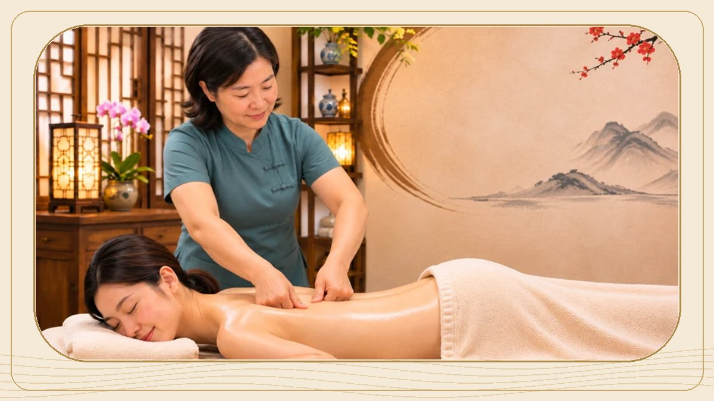

撥のイメージにおける局所の接触変化を知り、手法の特徴と安全な感覚の伝え方を理解します。
細かな接触とは何か
撥のブランドイメージは小幅で局所的な接触の変化が特徴です。広い範囲を移動する推に比べ、指と接触面の変化が目立ちます。これは手技を見分ける説明であり、解剖学的位置や特定組織の操作説明ではありません。「細かい」は深い、集中的、強いという意味ではありません。
局所接触では感覚をより明確に伝える
同じ指の接触でも好みは異なります。小さい範囲を好む人も、手のひらの広い接触が快適な人もいます。この違いは健康状態の判断方法ではなく、他人と感覚を比べる必要はありません。初めて撥を知る場合は他の手技との違い、苦手な場合の変更・中止方法を尋ねられます。
ネット映像を力加減の指導とみなさない
局所の近接撮影では手の動きが目立っても、実際の力加減を正確に示すとは限りません。当サイトの動画・イラストはブランドの特徴を示すだけで、真似する位置、深さ、頻度は提供しません。特にネットの実演を見て自分や他人の特定部位を繰り返し試すことは避けましょう。身体の異常への対応が目的なら適切な医療評価を受けてください。
我慢するより不快感を伝える
不快感は手技に必要だと考え、途中で我慢する人もいます。しかし一般的な日常のリラクゼーションでは痛みに耐える必要はありません。感覚が強すぎる、異常がある、心理的に続けたくないという場合もその場で中止を求められます。予約前に簡単な合図を決め、双方がいつ中断・変更すべきか分かるようにできます。
別の方法を選ぶことも合理的
撥を知ることは毎回選ぶことを意味しません。安定した接触が好みなら按、より連続した接触を知りたいなら推の記事を読めます。選ぶ前に実際の内容、適否、本人の意思を確認しましょう。一般的なマッサージにもリスクがあり、特殊な身体状態や最近のけががある人は先に医療従事者に相談してください。
手技を知ってから相談するか決める
撥と他の手技の違いだけ知りたいなら、すぐ予約せず記事を読むだけでも構いません。分からない用語を記録し、必要時に提供者に尋ねましょう。我慢を必須としたり結果を保証したりする説明があれば、立ち止まってサービスの範囲を再確認しましょう。
よくある質問：局所の感覚が強いほど専門的ですか？
そのような共通基準はありません。専門サービスは耐えられる程度を評価基準とせず、特定の接触による治療効果を約束してはいけません。説明の明確さ、範囲の尊重、感覚を伝えられる機会に注目できます。これらは非医療の民俗調理を選ぶ前に確認できる事項です。
参考資料
衛生福利部｜民俗調理業者の広告掲載時の注意（閲覧：2026-11-26）
米国NCCIH｜マッサージの安全情報（安全上の注意のみ）（閲覧：2026-11-26）
本文は一般的な生活・文化情報で、個別の医療助言ではありません。本人による確認待ちです。実際のサービス内容、料金、時間、場所はお問い合わせで確認してください。